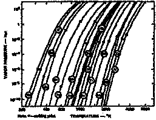

Vapor pressure of metals
- Alloys will fractionate when heated to evaporate temperature
The component of higher vapor pressure evaporate at a faster rate than the lower vapor pressure components, resulting in a deposition of different composition than original alloy.
Material Melting temperature, C Appoximate temperature at which
pressure=1.3 Pa (10^-2 torr), C
Al 660 1220
Ag 961 1030
Au 1063 1400
Fe 1535 1450
Ni 1450 1530
Cr 1900 1400
Ti 1670 1750
Mo 2610 2530
Ta 3000 3060
W 3380 3230
Alloy films are therefore evaporated using
- Simultaneous co-evaporation : two electron guns and two sources, with each source containing only one of the alloy constituents.
- Advantages:
- better promise of control
- possible to co-deposit materials that form neither compounds nor solutions.
- Disadvantage:
- complex system,
- uniformity of deposition across large substrates from two sources is reduced,
- relative power applied to the two source must be well controlled to insure that the desired evaporation rates are maintained.
- Significantly more difficult to deposit alloys with highly controlled compositions than by sputtering methods.


- Alloys will fractionate when heated to evaporate temperature
The component of higher vapor pressure evaporate at a faster rate than the lower vapor pressure components, resulting in a deposition of different composition than original alloy.
Material Melting temperature, C Appoximate temperature at which pressure=1.3 Pa (10^-2 torr), C
Al 660 1220 Ag 961 1030 Au 1063 1400 Fe 1535 1450 Ni 1450 1530 Cr 1900 1400 Ti 1670 1750 Mo 2610 2530 Ta 3000 3060 W 3380 3230
Alloy films are therefore evaporated using
- Simultaneous co-evaporation : two electron guns and two sources, with each source containing only one of the alloy constituents.
- Advantages:
- better promise of control
- possible to co-deposit materials that form neither compounds nor solutions. - Disadvantage:
- complex system,
- uniformity of deposition across large substrates from two sources is reduced,
- relative power applied to the two source must be well controlled to insure that the desired evaporation rates are maintained.
- Significantly more difficult to deposit alloys with highly controlled compositions than by sputtering methods.